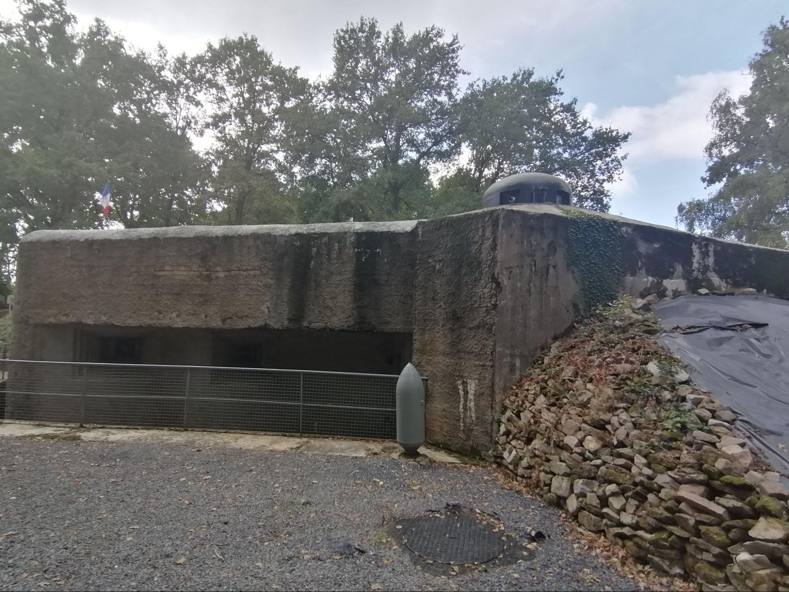
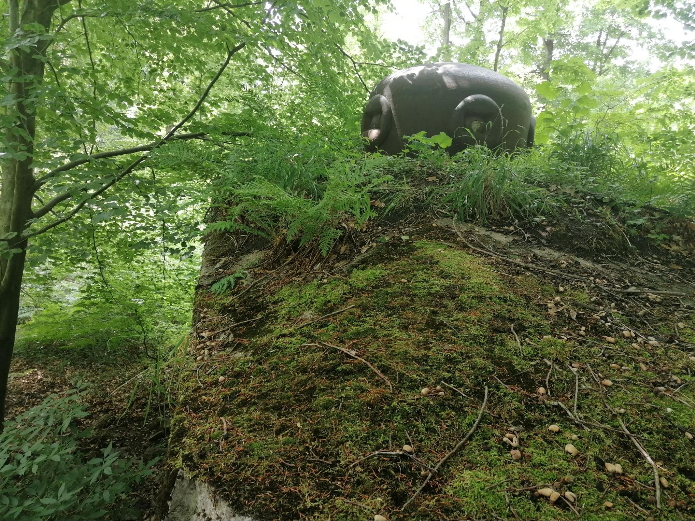
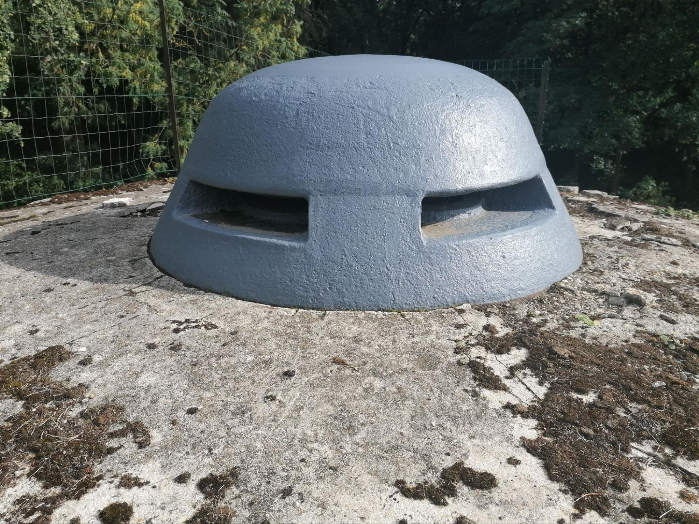
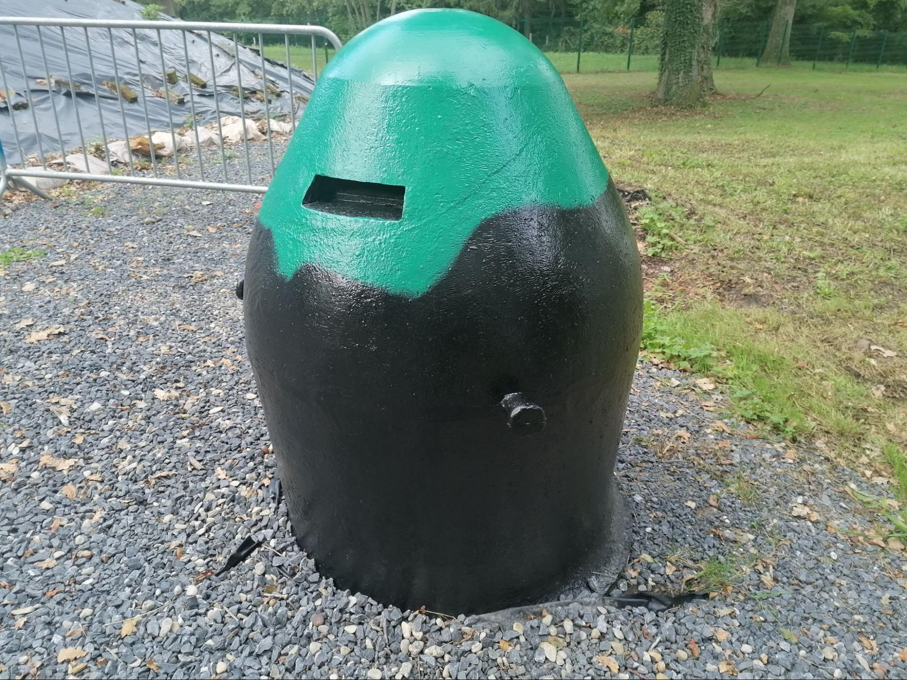

Les cloches cuirassées constituent l’un des éléments les plus emblématiques de la fortification de la ligne Maginot et de la ligne Daladier. Installées sur les blocs de combat des ouvrages et casemates, elles remplissaient plusieurs fonctions essentielles : observation du champ de bataille, défense rapprochée des abords, réglage des tirs et protection des servants grâce à leur blindage en acier moulé.
Ces cloches étaient conçues pour résister aux tirs d’artillerie et aux éclats d’obus. Leur épaisseur variait selon les modèles et leur rôle tactique. Certaines étaient exclusivement destinées à l’observation, tandis que d’autres pouvaient recevoir des armes automatiques ou des armes antichars.
Les cloches GFM étaient les plus répandues sur les ouvrages fortifiés. Leur mission principale consistait à assurer la surveillance des alentours et la défense rapprochée des blocs.
Leur blindage atteignait généralement entre 20 et 30 centimètres d’épaisseur. Elles étaient armées d’un fusil-mitrailleur de 7,5 mm pouvant être utilisé à travers différents créneaux.
Un périscope pouvait être installé au sommet de la cloche afin d’observer le terrain environnant sans exposer l’équipage.

La casemate du mont des bruyères (cloche type A)
La cloche GFM type B constitue une évolution renforcée du modèle précédent. Son diamètre intérieur plus important, d’environ 1,30 mètre, permettait une meilleure circulation des servants.

Une cloche GFM type B
Les cloches JM étaient spécialement conçues pour recevoir un jumelage de mitrailleuses identique à celui utilisé dans les chambres de tir des casemates.
Ces cloches associaient deux mitrailleuses à un canon antichar de 25 mm, permettant une polyvalence contre infanterie et blindés.
Les cloches type C étaient des versions simplifiées des cloches GFM, uniquement destinées à l’observation.
Les cloches type Valenciennes étaient des cloches d’observation avec trois fentes et positionnées en toiture des blockhaus.

Une cloche type valenciennes sur un blockhaus

Une cloche type valenciennes mise à nu.